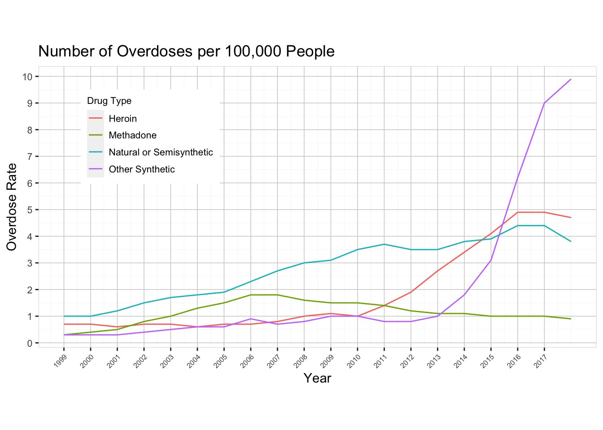
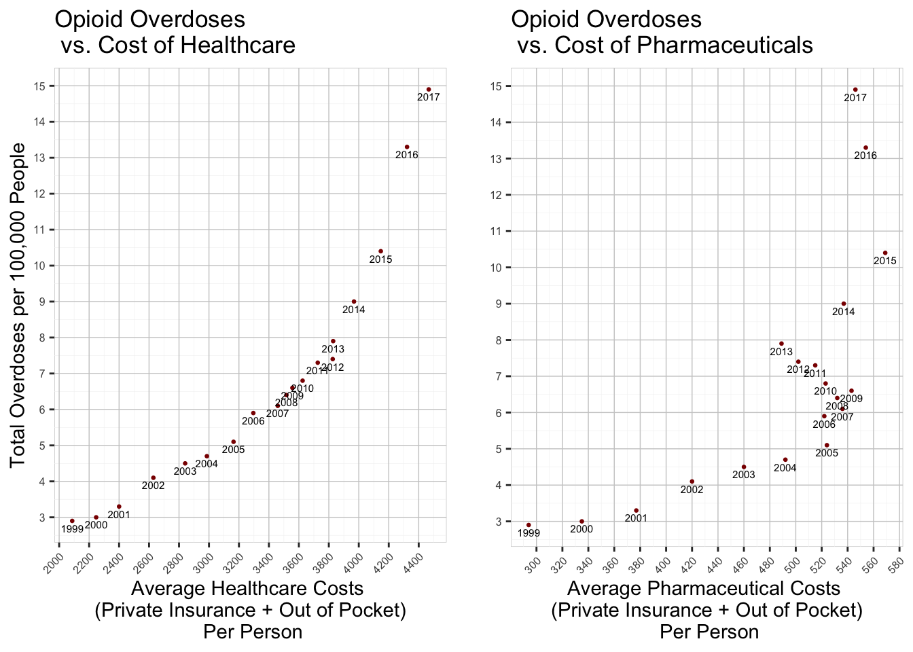

We divided our key findings into three separate parts, one for each dataset inspected. First, to explore demographic trends we investigated the database of opioid overdoses. Then, we compared that information with that within the healthcare spending dataset. Finally, we compared the overdose statistics to the unemployment information.
Below is a line plot which graphs the rate of overdoses by drug type for the 19 year span between 1999 and 2017. The y-axis shows the number of people who passed away for a given population of 100,000 individuals. By investigating a rate instead of a total, we can ignore the effect of the growing population.
Code
library(ggplot2)library(tidyr)library(dplyr)
Attaching package: 'dplyr'
The following objects are masked from 'package:stats':
filter, lag
The following objects are masked from 'package:base':
intersect, setdiff, setequal, union
Warning: The `size` argument of `element_rect()` is deprecated as of ggplot2 3.4.0.
ℹ Please use the `linewidth` argument instead.
Warning: The `size` argument of `element_line()` is deprecated as of ggplot2 3.4.0.
ℹ Please use the `linewidth` argument instead.

One of the research questions we were interested in solving was whether or not the CDC was correct about the three distinct spikes. They claimed that there was a dramatic rise in heroin use in 2010, and another such rise in synthetic opioids in 2013. Unfortunately, our dataset does not go back to the 1990’s so we cannot see about the rise of prescription drug abuse. However, there are clearly dramatic inclines for heroin (red line) and synthetic opioids (cyan line) on the specified years. So we can conclusively say that the CDC was valid with their assertion.
3.2 Demographic Trends
We were also interested in exploring whether or not race played any part in abuse patterns. Below is a heat map, faceted by drug type, that shows the fatality rates for each of four races (white, black/African American, Alaska Native/Native American, Asian/Pacific Islander).
Code
library(tidyverse)
── Attaching core tidyverse packages ──────────────────────── tidyverse 2.0.0 ──
✔ forcats 1.0.0 ✔ readr 2.1.4
✔ lubridate 1.9.2 ✔ stringr 1.5.1
✔ purrr 1.0.2 ✔ tibble 3.2.1
── Conflicts ────────────────────────────────────────── tidyverse_conflicts() ──
✖ dplyr::filter() masks stats::filter()
✖ dplyr::lag() masks stats::lag()
ℹ Use the conflicted package (<http://conflicted.r-lib.org/>) to force all conflicts to become errors
Unfortunately, the demographic data was missing information for Asian/Pacific Islander and Alaska Native/Native American so we cannot make meaningful insights about these groups over time. The most deadly pattern displayed is heroin and synthetic opioid abuse in the years after 2015. These years saw many fatalities for members belonging to the white, black, and Alaska Native/Native American groups. Closely following those two drugs in total deaths is natural/semisynthetic opioids. These drugs had a consistent rate of casualties since about 2003, increasing slightly over time. From this data, we can observe slight discrepancies between abuse patterns among different races, but it is clear that the opioid crisis affects people of all ethnicities.
3.3 National Health Expenditures
In this section, we will look at graphs that display trends between drug fatalities and the cost of healthcare in the United States. The reason we chose this specific topic was by asking ourselves what external factors may cause individuals to abuse drugs. We hypothesized that people would self-medicate using narcotics more if the price of healthcare was too expensive. Below are two line plots, one which displays the average cost of healthcare per person, and the other which shows the average cost of prescription drugs per person. This information was calculated by extracting healthcare spending data from the NHE database and dividing by the US population for each year. The result shows how much money was spent, on average, by each person in the country.
Code
library(dplyr, warn.conflicts =FALSE)library(tibble)nhe <-read.csv('~/Downloads/NHE2021.csv')pop1 =read.csv("~/Downloads/POPTOTUSA647NWDB.csv")pop <- pop1library(data.table, warn.conflicts =FALSE)nhe <-transpose(nhe)nhe_new <- nhecolnames(nhe_new) <- nhe[1, ]nhe <- nhe_newnhe <- nhe[-1,]rownames(nhe) <-c(1960:2021)nhe$Year <-rownames(nhe)nhe <-subset(nhe, Year >1998& Year <2018)nhe <- nhe %>%select(c(2, 4, 5, 6, 282, 284, 285, 286))colnames(nhe) <-c('Out of pocket', 'Private Health Insurance', 'Medicare', 'Medicaid', 'Out of pocket-Drug', 'Private Health Insurance-Drug', 'Medicare-Drug', 'Medicaid-Drug' )nhe <- tibble::rownames_to_column(nhe, "Year")pop <- pop %>%mutate(across(everything(), as.character))nhe <-bind_cols(nhe, pop['POPTOTUSA647NWDB'])nhe$POPTOTUSA647NWDB <-as.numeric(nhe$POPTOTUSA647NWDB)nhe$`Out of pocket`<-1000000*as.numeric(gsub(",", "", nhe$`Out of pocket`))/nhe$POPTOTUSA647NWDBnhe$`Private Health Insurance`<-1000000*as.numeric(gsub(",", "", nhe$`Private Health Insurance`))/nhe$POPTOTUSA647NWDBnhe$Medicare <-1000000*as.numeric(gsub(",", "", nhe$Medicare))/nhe$POPTOTUSA647NWDBnhe$Medicaid <-1000000*as.numeric(gsub(",", "", nhe$Medicaid))/nhe$POPTOTUSA647NWDBnhe$`Out of pocket-Drug`<-1000000*as.numeric(gsub(",", "", nhe$`Out of pocket-Drug`))/nhe$POPTOTUSA647NWDBnhe$`Private Health Insurance-Drug`<-1000000*as.numeric(gsub(",", "", nhe$`Private Health Insurance-Drug`))/nhe$POPTOTUSA647NWDBnhe$`Medicare-Drug`<-1000000*as.numeric(gsub(",", "", nhe$`Medicare-Drug`))/nhe$POPTOTUSA647NWDBnhe$`Medicaid-Drug`<-1000000*as.numeric(gsub(",", "", nhe$`Medicaid-Drug`))/nhe$POPTOTUSA647NWDBnhe$POPTOTUSA647NWDB <-NULL nhe_long <- nhe %>%pivot_longer(!Year, names_to="Category", values_to="Amount") nhe_long$Amount <-as.integer(nhe_long$Amount) nhe_long$Type <-with(nhe_long, ifelse(endsWith(Category, "Drug"), "Drug", "General"))library(gridExtra)
Attaching package: 'gridExtra'
The following object is masked from 'package:dplyr':
combine
We have included vertical lines to mark the rise in heroin and sythetics in the years 2010 and 2013, respectively. One pattern that jumped out at us was in the year 2013, when the cost of private health insurance skyrocketed, both in general and in pharmaceutical payments. The NHE defines this category as “the net cost of private health insurance which is the difference between health premiums earned and benefits incurred”. Interestingly, the boom in health insurance prices in 2013 reflects a similar rise in synthetic opioid abuse. It is our contention that this inflated cost of care caused people to seek alternate solutions to medicate themselves, namely narcotics. However, correlation does not prove causation and these results may simply be coincidental. The other three categories (Medicare, Medicaid, and out of pocket expenses) do not provide us with any meaningful takeaways on the financial toll incurred by the population of this country.
Below we created two scatterplots to see if there is any discernible correlation between the cost of healthcare/pharmaceuticals and the overdose rate for opioids.
Code
drug_all <- drug[ which(drug$STUB_NAME=='Total'& drug$UNIT =='Deaths per 100,000 resident population, age-adjusted'& drug$PANEL_NUM ==1), ]drug_all <-filter(drug_all, YEAR !="2018")expenditures_drug <-filter(nhe_long, Category =="Out of pocket-Drug"| Category =="Private Health Insurance-Drug")expenditures_drug <- expenditures_drug %>%group_by(Year) %>%summarize(drug_spending =sum(Amount),.groups ='drop') expenditures_all <-filter(nhe_long, Category =="Out of pocket"| Category =="Private Health Insurance")expenditures_all <- expenditures_all %>%group_by(Year) %>%summarize(healthcare_spending =sum(Amount),.groups ='drop')combined <-bind_cols(drug_all['ESTIMATE'], drug_all['YEAR'], expenditures_drug, expenditures_all, pop1['POPTOTUSA647NWDB'])
New names:
• `Year` -> `Year...3`
• `Year` -> `Year...5`
Code
p1 <-ggplot(combined, aes(x= healthcare_spending, y= ESTIMATE, label=YEAR))+geom_point(size=0.5, color="red4") +geom_text(size=2, hjust=0.5, vjust=1.5) +scale_x_continuous(n.breaks =15, breaks=waiver()) +scale_y_continuous(breaks =seq(0,15,1)) +theme(panel.background =element_rect(fill ='white', color ='gray80', size=0.25),panel.grid.major =element_line(color ='gray80', size =0.25),panel.grid.minor =element_line(color ='gray95', size =0.1),axis.text.x =element_text(angle=45, hjust=1,size=6),axis.text.y =element_text(angle=0, hjust=1,size=6)) +labs(title="Opioid Overdoses \n vs. Cost of Healthcare",y="Total Overdoses per 100,000 People",x="Average Healthcare Costs \n(Private Insurance + Out of Pocket)\n Per Person")p2 <-ggplot(combined, aes(x= drug_spending, y= ESTIMATE, label=YEAR))+geom_point(size=0.5, color="red4") +geom_text(size=2, hjust=0.5, vjust=1.5) +scale_x_continuous(n.breaks =15, breaks=waiver()) +scale_y_continuous(breaks =seq(0,15,1)) +theme(panel.background =element_rect(fill ='white', color ='gray80', size=0.25),panel.grid.major =element_line(color ='gray80', size =0.25),panel.grid.minor =element_line(color ='gray95', size =0.1),axis.text.x =element_text(angle=45, hjust=1,size=6),axis.text.y =element_text(angle=0, hjust=1,size=6)) +labs(title="Opioid Overdoses \n vs. Cost of Pharmaceuticals",y ="",x="Average Pharmaceutical Costs \n(Private Insurance + Out of Pocket)\n Per Person")grid.arrange(p1,p2, nrow=1)

Each point represents a year in the time frome between 1999 and 2017. On the x-axis is the average cost of healthcare/prescription drugs per person. This value is the sum of out-of-pocket costs and health insurance costs. The y-axis is the rate of opioid-related fatalities per 100,000 individuals. Using the correlation function in r, we were able to determine that there is a 91% correlation between healthcare spending and fatality rates. We also determined that there is a 69% correlation between pharmaceutical spending and fatality rates. These trends may be coincidental, or they could point to a systematic issue within the United States healthcare system that neglects the less fortunate.